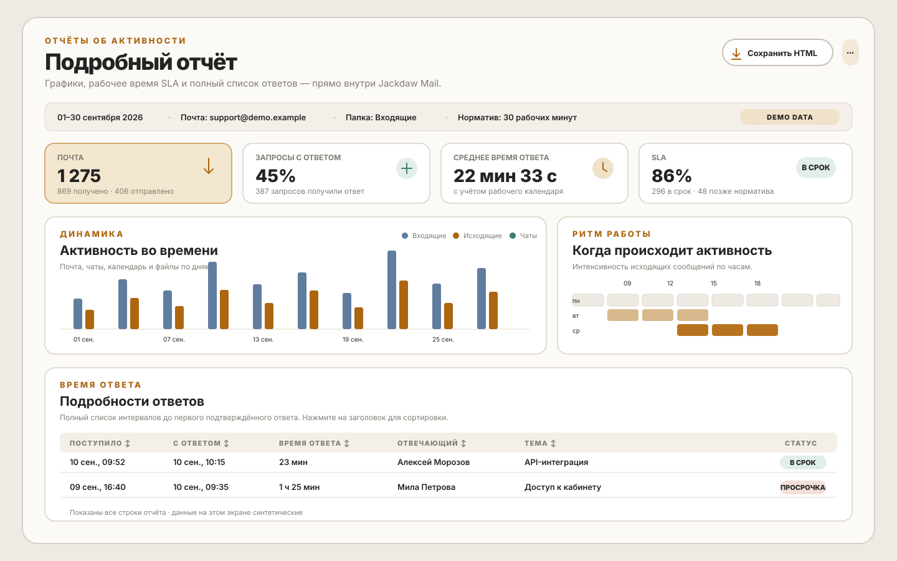
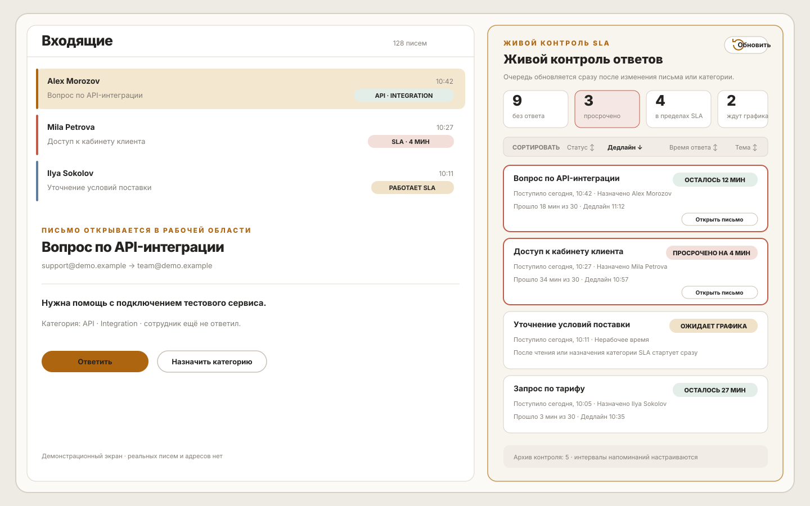

Desktop-клиент для Exchange и OWA с живым контролем SLA
Быстрая работа с корпоративной почтой, мгновенная синхронизация общих ящиков (Shared Mailboxes), интерактивные отчёты скорости ответа и рабочий календарь без облачных посредников.


Индивидуальный график рабочих смен
В отличие от примитивных почтовых систем, считающих календарное астрономическое время, Jackdaw Mail точно знает рабочие часы вашей команды по каждому дню недели:
Создан для ответственной переписки
Все инструменты, необходимые специалистам технической поддержки, аккаунт-менеджерам и командам корпоративного сервиса.
Живая очередь SLA
- Индивидуальный норматив в рабочих минутах
- Напоминания до наступления дедлайна
- Исключение рассылок и писем в копии
Интерактивная аналитика
- Тепловая карта загрузки по часам
- Процент вовремя обработанных обращений
- Сортировка и фильтрация по категориям
Рабочий календарь
- Настройка начала и конца дня для каждого дня
- Исключение нерабочего времени и выходных
- Справедливые показатели скорости ответа
Синхронизация OWA & EWS
- Мгновенная смена категорий и тегов
- Дерево папок с дельта-синхронизацией
- Поддержка IMAP, JMAP, CalDAV и CardDAV
Автономный HTML-экспорт
- Все графики и таблицы встроены в один файл
- Открывается в любом браузере офлайн
- Никаких внешних ссылок и утечек данных
Local-First безопасность
- Открытый исходный код (EUPL-1.2)
- Локальная база данных SQLite
- Полное соответствие требованиям 152-ФЗ и GDPR
Честное сопоставление возможностей
Почему команды, работающие по стандартам SLA и корпоративным регламентам, выбирают Jackdaw Mail.
| Функциональность | Jackdaw Mail | Классический Outlook | Веб-клиент OWA |
|---|---|---|---|
| Живой таймер SLA в рабочих минутах | ✓ Встроен в боковую панель | ✕ Отсутствует | ✕ Отсутствует |
| Расчёт SLA с учётом рабочего графика по дням недели | ✓ Автоматически | ✕ Нет | ✕ Нет |
| Интерактивный дашборд и тепловая карта | ✓ Встроено | ✕ Требует сторонних надстроек | ✕ Нет |
| Синхронизация OWA Shared Mailboxes | ✓ Нативная, с категориями | Частичная (бывают задержки) | ✓ Нативная |
| Экспорт отчёта в автономный HTML | ✓ В 1 клик | ✕ Нет | ✕ Нет |
| Архитектура хранения данных | Local-First (на устройстве) | Local-First | Только облако |
| Лицензия и открытость кода | EUPL-1.2 Open Source | Proprietary | Proprietary |
Никаких облачных посредников
В отличие от современных «умных» почтовых клиентов, мы не читаем ваши письма на сторонних серверах.
Прямой защищённый контур
Jackdaw Mail подключается напрямую к вашему корпоративному серверу Microsoft Exchange (OWA/EWS), IMAP или CalDAV.
Все расчёты SLA, парсинг заголовков сообщений, построение графиков и хранение категорий происходят исключительно на вашем компьютере с помощью легковесной встроенной базы данных.
✕ Никакого доступа к содержимому писем
✓ Полная автономность и конфиденциальность
Установите Jackdaw Mail
Доступно для macOS, Windows и Linux. Бесплатные базовые возможности и прозрачное Pro-лицензирование.